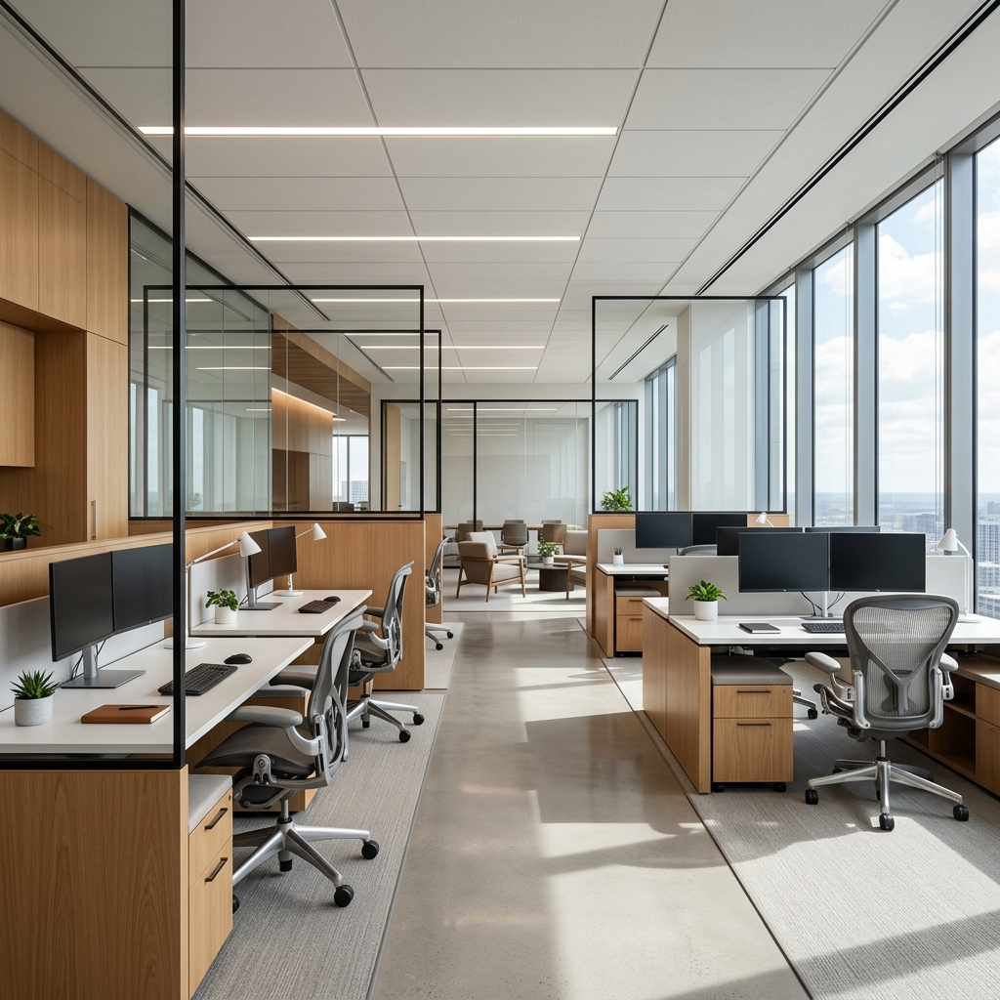

Bar & Pasticceria Parisi
Riqualificazione d’interni e layout operativo per uno storico caffè siciliano.
Ogni spazio è un ecosistema di flussi, luce e materiali progettato su misura per ottimizzare il workflow operativo ed esprimere l’identità autentica del brand.
Riqualificazione d’interni e layout operativo per uno storico caffè siciliano.

Design d’atmosfera per un ristorante gourmet nel cuore di Taormina.

Interior design e arredi contract per un boutique hotel d’epoca.

Progettazione chiavi in mano per spazi comuni, suite ed aree outdoor di lusso.

Banchi frigo su misura e finiture materiche resistenti al flusso continuo di clienti.

Laboratorio a vista e bancone espositivo ad alta visibilità per pasticceria artigianale.
Concept store moderno dedicato all’arte bianca e all’eccellenza culinaria locale.
Valorizzazione delle eccellenze enogastronomiche in un layout premium ed accogliente.

Ottimizzazione del percorso cliente e arredi tecnici d’avanguardia.
Spazio wellness e consulenza caratterizzato da linee minimali e finiture in legno chiaro.

Ristrutturazione funzionale ed elegante per un punto vendita multiservizi.
Spazio raffinato per appassionati con arredi umidificati su misura.

Showroom di abbigliamento d’alta moda con allestimenti flessibili e finiture grezze.
Design espositivo d’avanguardia con illuminazione lineare integrata.